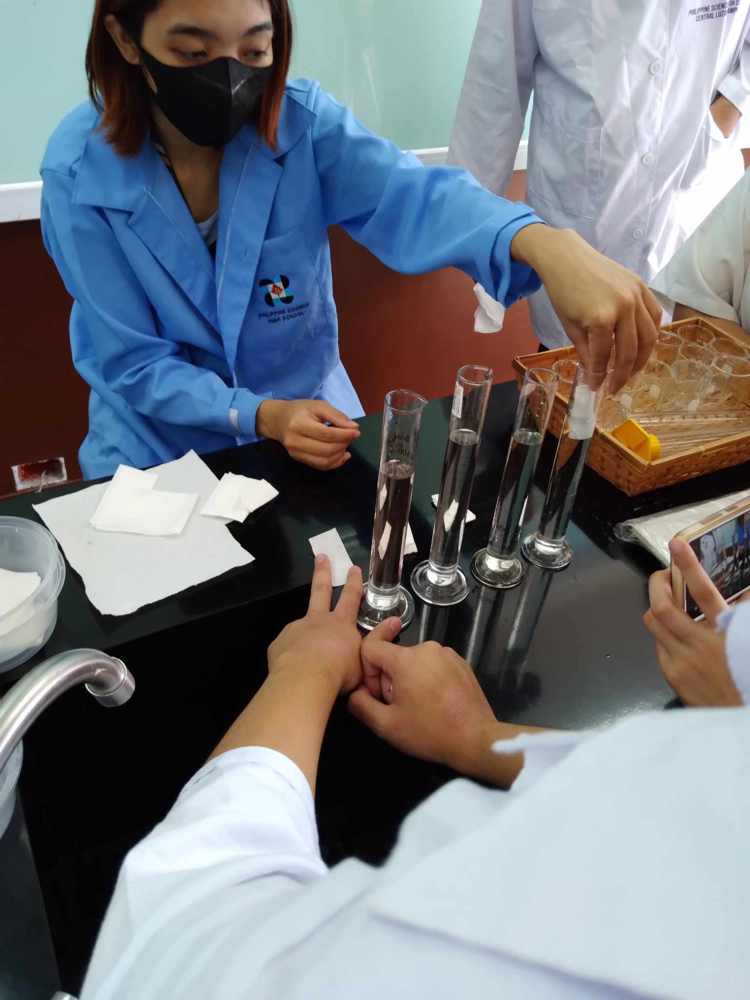

AA1: Digestive System Simulation
Introduction
This laboratory page aims to enhance one's understanding of the digestive system, its function, and the processes involved in digestion. Understanding the digestive system is essential as it helps one better understand how one's body processes one's food which helps in maintaining good health and a balanced diet. It also provides a basis for understanding how various digestive illnesses and disorders are caused and how to prevent them. The simulation activity helps one understand the digestive system by helping one visualize how different organs function and what happens if a certain organ is removed. For instance, removing the gallbladder will cause the body to have difficulty digesting fats as it is the organ that stores bile, a fluid that aids in the digestion of fat, which means one should limit the consumption of fatty food. Simulation of the digestive system also helps one understand what would happen if the sequence of processes is altered and enables one to manipulate the model to understand the organ and its parts.
Section I: Stages of Food Processing
Subsection: Crushing Stage
Q1: What is being simulated by putting bananas and crackers in the zip lock?
When we put the bananas and crackers in the zip lock, the food we put in seems to represent our food bolus. Once it goes out of the esophagus, it will fall into the stomach to start the digestion stage.
Q2: What is being simulated by the addition of water?
The water acts as the gastric juices that breaks down the food bolus. We started noticing this when the banana and crackers were becoming more mushier and easier to break apart when the water was poured in, like the hydrochloric acid in the stomach.
Q3: What does the zip-locked bag represent?
The zip-locked bag represents the stomach itself. We noticed this because of the banana, crackers, and water, which have similar functions to the stomach.
Q4: What does crushing the food simulate?
The crushing motion on the banana and crackers is like the stomach's churning motion, this is the part where the food bolus' proteins will be digested and turned into chyme.
Q5: What is being simulated by the addition of orange juice?
The addition of orange juice represents the gastric juices getting more concentrated to digest more easily.

Q6: What do you think are the possible biomolecule components of the food inside?
The biomolecule components inside the food could be digested carbohydrates like smaller polysaccharides and disaccharides, and protein being digested into small polypeptides due to pepsin in the stomach.
Subsection: Transfer Stage
Q7: What is being simulated by the liquid flowing out of the stocking?
The liquid running out of the sock reflects nutrient absorption in the small intestine, which is represented by the sock.
Q8: What does the tray represent?
The tray depicts the bloodstream, which is where all of the liquid ends up.
Q9: What is left inside the stocking?
The solid substance is what is left inside the of the sock which represents feces, and the sock itself represents the large intestine.
Q10: What is being simulated by pushing the partially solidified content?
The solid substance pushed out of the cup hole simulates feces exiting the digestive tract or elimination.
Section 2: Simulation of Absorption

Q11: Which paper towel absorbed the largest amount of water? What could be the possible explanation?
Of the four paper towels, the tissue with four folds absorbed the most, possibly because the folds gave it more surface area to absorb more.
Q12: In which organ of the digestive system can you compare the paper towels? How does the structure of the organ help in its function?
This experiment is comparable to the absorption process that happens in the small intestine. More specifically, the folded tissue is similar to the folded villi lining in the small intestine. Its folded structure helps in absorption just like how the folded tissue took up more water, because of its increased surface area.
Section 3: Simulation of Bile Action
Q13: Explain the role of bile in digestion. Is it involved in chemical or mechanical digestion?
After Jars A and B were shaken and observed, it showed that there are bubbles from the soap in Jar A and some of the oil from Jar B continued to cling to the wall of their respective containers. This is a representation of what bile does in the digestive process. Bile is a chemical produced by your liver and stored in the gallbladder, which when released breaks down fatty acids, hence functioning as a chemical digestive process.
Conclusion and Reflection
As we conclude our experiment, we have learned lots of things from both studying and simulating the digestive system. With our knowledge from both the classroom and the lab, we have a great knowledge of when food is digested and how it's broken into small pieces and converted into stools. Now I know that when I eat food, there are very complex processes inside us that filter and convert food into glucose, amino acids, fatty acids, and more that give nutrients to the human body. Other than that, there are enzymes like pepsin that turn proteins into smaller particles that go into the small intestine which leads them to the anus. And when times comes, these small particles become stool ending the process. As we reflect on the digestive system, I realize that when we eat food, there are extraordinary processes inside our body that we don't think of all the time. But now with our great knowledge of things, we can appreciate how amazing these things are.